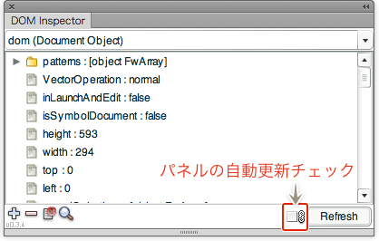

この記事はFireworks Lover Advent Calendar 2013 の空いていた15日目の記事です。あと若干のリクエストがあったので書いております。
さまざまな方が解説されている中、あえて今一度Fireworksのコマンドの作り方を書いてみます。
Fireworksのコマンドについて
Macromedia時代のバージョン3のころからある、スクリプトによる機能拡張です。そのスクリプトもJavaScriptをベースに拡張しているため、割とウェブやっている方なら親和性が高いのではないでしょうか。
必要なもの
- Adobe Fireworks
- これがないとはじまりません。
- お好きなエディター
- 私はSublimeTextを使っています。.jsfをJavaScriptとして開くようにしているので、コード補完やハイライトなどでなかなか捗ります。
- JavaScriptの知識
- 今更「var ゴニョゴニョ」とかは解説しませんので、例えば[とほほのJavaScriptリファレンス][2]で、目的の項目が探せるぐらいの知識は必要です。複雑なことをしなければ、そこまで高いレベルは必要ありません。
あると捗るもの
Dom Inspector（Fireworksコマンドパネル）
現在選択しているオブジェクトやドキュメントの情報を視覚的に表示してくれます。属性値の変更が可能であれば、このパネルから変更ができます。

ここの一覧にあります。DownloadをクリックするとSWFが再生されるので、それを保存してCoomand Panelsフォルダに入れてください。
ちなみにこのパネルの右下にある、自動更新（auto refresh）にチェックを入れておくと、テキストオブジェクトの編集時にテキストの部分選択ができなくなるので注意してください。
Fireworks Console（Fireworksコマンドパネル）
Adobe謹製のデバッガーがないので、これを使います。以前は、alert()でアラートを表示しながらデバッグという、古典的な方法を取らざるを得ませんでしたが、これのおかげでかなり捗るようになりました。

パネルの上部は、スクリプトを直接書いて実行できます。お決まりのfw.getDocumentDOM()とfw.selectionは、それぞれdomとselとして定義されているので、ここでは不要です。
console.log()などで、パネルの下にログを表示できます。配列やオブジェクトも文字列として出力してくれます。Autoのチェックボックスは入れておく方がいいでしょう。手動でログ出力するには、その左にある「Print .jsf log」ボタンをクリックします。
Commands（Fireworksコマンドパネル）
Fireworks Consoleと同じ作者のコマンドパネルです。PhotoshopやIllustratorのアクションパネルにボタンモードがあると思いますが、それをFireworksで実現します。またスタイルやメニュー項目など、コマンド以外もクリック一つで実行できるようになります。

ショートカットを設定するまでもないんだけど、たまに使うようなコマンドをFavorite（星マークを付ける）に登録しておけば、メニューから辿らなくてもすぐに使えて便利です。私は、開発中はショートカットを設定しないので、これをよく使っています。
一番簡単なコマンドの作り方
いろんなブログで言及されていますが、ヒストリーから「手順をコマンドとして保存」をすることで、簡単にコマンドが作成できます。
が、定型のモノしか保存できないため、やはり自分の欲しい機能はカスタマイズするしかありません。
コマンドをカスタマイズしてみよう
保存ボタンの横にある「手順をコピー」をクリックすると、その手順のスクリプトが取得できます。今回はこれを元に、数値入力してオブジェクトの移動ができるようなコマンドを作ってみます。

まずはオブジェクトを移動させ、手順をコピーするとこんなスクリプトが取得できるはずです。
fw.getDocumentDOM().moveSelectionBy({x:140, y:93}, false, false);
ひとまず、これをエディタにペーストして保存しましょう。ファイル名には自由に付けて大丈夫です。拡張子は.jsfになります。
保存場所ですが、わかりやすいところに作成したフォルダに保存した後、OSXなら /Users/[User]/Library/Application Support/Adobe/Fireworks CS6/Commands へフォルダのエイリアスを、Windowsなら C:¥Users¥[User]¥AppData¥Roaming¥Adobe¥Fireworks CS6¥Commands へフォルダのショートカットを入れると、Fireworks側できちんと認識してくれます。（途中の[User]の部分はご自身の環境に合わせて読み替えてください）
逆にCommandsフォルダにフォルダを作って、エイリアス/ショートカットをわかりやすいところに作成でもいいのですが、完全にアンインストールした時に一緒に消しちゃった！という自体になりかねないので、前者をお薦めします。
で、項目を分解してザックリと解説すると、
fwは、jQueryでいうところの$です。
getDocumentDOM()は、ドキュメントの構造体を取得するものです。乱暴に言うと、ドキュメントはHTMLのDOMツリーのように構成されており、現在開いているドキュメントのサイズやオブジェクト・パターンなどの情報を一気に取得します。
多くの場合、var dom = fw.getDocumentDOM();といった感じで変数に収めて使い回しますが、今回はしません。
moveSelectionBy()は、選択範囲を動かすメソッドです。ドキュメントであるAdobe Fireworks * dom.moveSelectionBy()を見てみると、「指定された数値分の移動またはコピー」ができるメソッドということがわかります。
{x:140, y:93}が移動距離です。X座標に+140px、Y座標に+93px移動していることがわかります。
false（1つ目）は、先ほどのドキュメント見ると、bMakeCopyの項目にあたり、移動させるかコピーするかを決める真偽値ということがわかります。falseが移動のみです。
false（2つ目）は、こちらもドキュメントを確認してみると、パスのアンカーを選択している場合に、アンカーを動かすかオブジェクト全体を動かすかを決める真偽値ということがわかります。falseを指定するとオブジェクト全体を動かします。
とりあえず目的のコマンドを作成するには、
- コマンドを実行
- 数値を入力する
- 入力した数値で移動させる
という感じになるので、ヒストリーから作成したコマンドの{x:140, y:93}の部分を書き換えればいいということになります。
入力のインターフェイス
コマンドで使える入力インターフェイスは、JavaScriptのalert()やprompt()などがあります。今回は数値の入力が必要なのでprompt()を使い、下記のように書き換えます。
prompt( '移動するX軸の距離を入力してください。', '' );<br />
fw.getDocumentDOM().moveSelectionBy({x:140, y:93}, false, false);
とりあえずダイアログが出て、数値は入力できるようになりました。しかし、このままでは入力した数値が使えないので、さらに下記のように変更します。
もしダイアログのメッセージが文字化けする場合は、文字コードをShift_JISに変更してみてください。
var x = prompt( '移動するX軸の距離を入力してください。', '' );
console.log( x );
fw.getDocumentDOM().moveSelectionBy({x:140, y:93}, false, false);
これで入力した値が使えるようになりました。さらにログをFireworks Consoleに出力できるようにしたので、入力した値がコンソールに出ていればOKです。Y座標も同じようにします。（ちなみにFireworks Consoleが入っていないFwで、console.log()を実行するとエラーになるので、もし配布することがあればご注意を）
var x = prompt( '移動するX軸の距離を入力してください。', '' );
var y = prompt( '移動するY軸の距離を入力してください。', '' );
console.log( x, y );
fw.getDocumentDOM().moveSelectionBy({x:140, y:93}, false, false);
2回ダイアログがでて、X/Yとも入力できるようになりました。続いて、移動先の座標を入力された座標にしたいので、{x:140, y:93}の部分を変更します。
var x = prompt( '移動するX軸の距離を入力してください。', '' );
var y = prompt( '移動するY軸の距離を入力してください。', '' );
console.log( x, y );
fw.getDocumentDOM().moveSelectionBy({x:x, y:y}, false, false);
これでひとまず完成です。カーソルキーとどちらが早いか？という話もありますが、とりあえず距離を指定して移動できるようになりました。
さらにカスタマイズ
ザックリとつくったので、当然ながら入力された値のチェックができてなかったり（個人的に使うのなら不要ですが）、ダイアログを2回出してそれぞれ入力していたりと、ちょっと貧弱ですね。ダイアログを1つにまとめてみたり、四則演算できるようにしたりと改造できるポイントはありますので、ぜひチャレンジしてみてください。
これを元に私が作ったコマンドはこちらです。あと先日公開したSlice Modifierもソースを公開しております。ご覧のいただくとわかると思いますが、ほとんどがJavaScriptでFireworksのメソッドを使っているのは、オブジェクトを処理するときぐらいなのです。
え、ドキュメントが英語で分かりづらい？ メソッド名から大体機能は想像できると思いますが、ほんの一部をつたない英語力でシコシコと翻訳したものを貼っておきますねっlittlebusters/ExtendingFireworksTranslation
あの発表があってからモチベーションが下がって途中やめなので、誰か続き頼む。
というわけで、よいFireworks コマンドライフを！